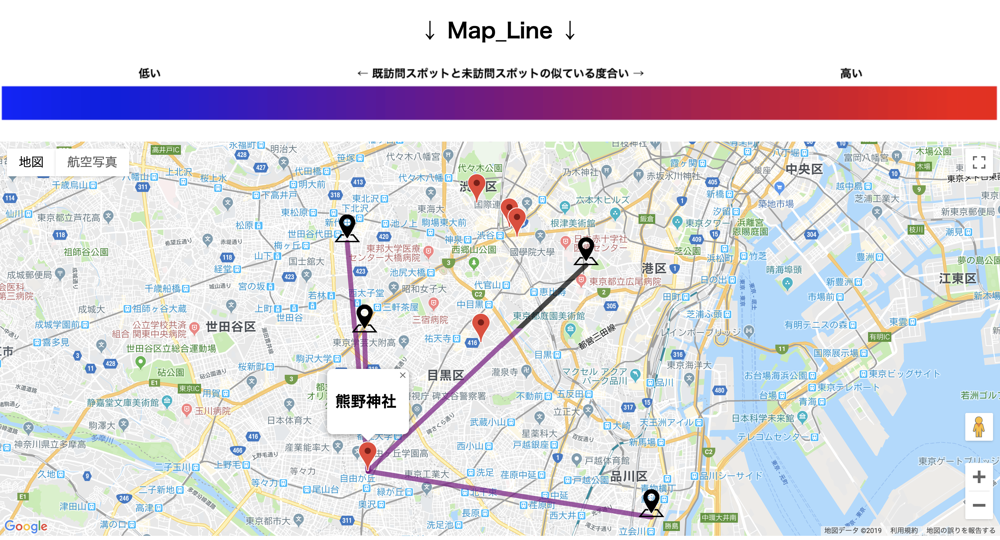
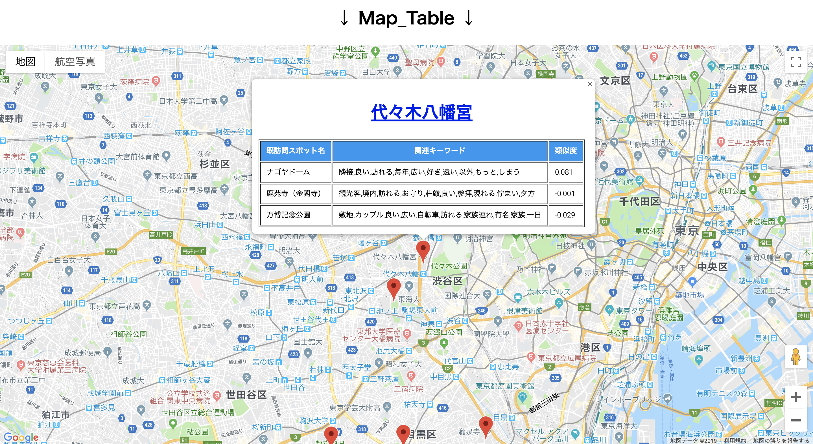

出力説明
「実験開始」をクリックしたあと，Map_Positon，Map_Line，Map_Tableがランダムの順番で表示されます．
Map_Positon，Map_Line，Map_Tableの表示順番も記録してください．CrowdWorks側の順番欄から選んでください．
Map_Positionについての説明

赤いピン：未訪問エリア内のスポット
黒いピン：入力された既訪問スポット
操作方法：
赤いピンをクリックした後で黒いピンをクリックして詳細情報を確認してください．
黒いピンが表示される詳細情報は，未訪問スポット名，既訪問スポット名，関連キーワードです．
Map_Lineについての説明

赤いピン：未訪問エリア内のスポット
黒いピン：入力された既訪問スポット
カラーマップ：
カラーマップは赤いピンと黒いピンの類似度（似ている度合い）を示しています．
青色に近づくと既訪問スポットと未訪問スポットの関連性が低いと意味しています．
赤色に近づくと既訪問スポットと未訪問スポットの関連性が高いと意味しています．
操作方法：
赤いピンをクリックした後で黒ピンをクリックして詳細情報を確認してください．
黒いピンが表示される詳細情報は，未訪問スポット名，既訪問スポット名，関連キーワードです．
Map_Tableについての説明

赤いピン：未訪問エリア内のスポット
操作方法：
赤いピンをクリックすると詳細情報が表示されます．
詳細情報は，未訪問スポット名とそれに関連する既訪問スポット名，関連キーワード，類似度です．
類似度（似ている度合い）の値は「-1~1」の間になります．
「-1」に近づくと既訪問スポットと未訪問スポットの関連性が低いと意味しています．
「1」に近づくと既訪問スポットと未訪問スポットの関連性が高いと意味しています．